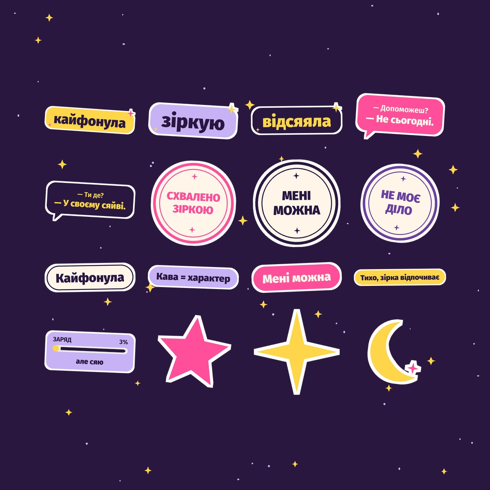
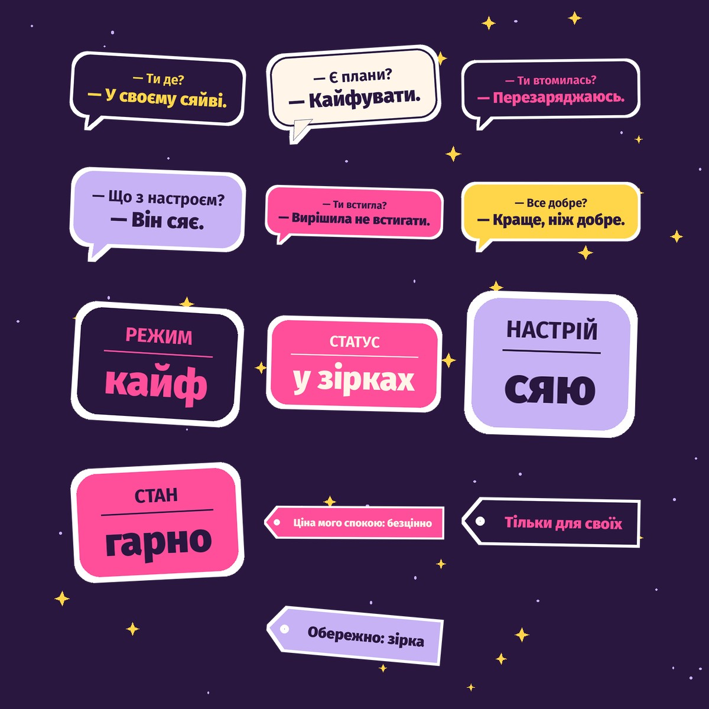
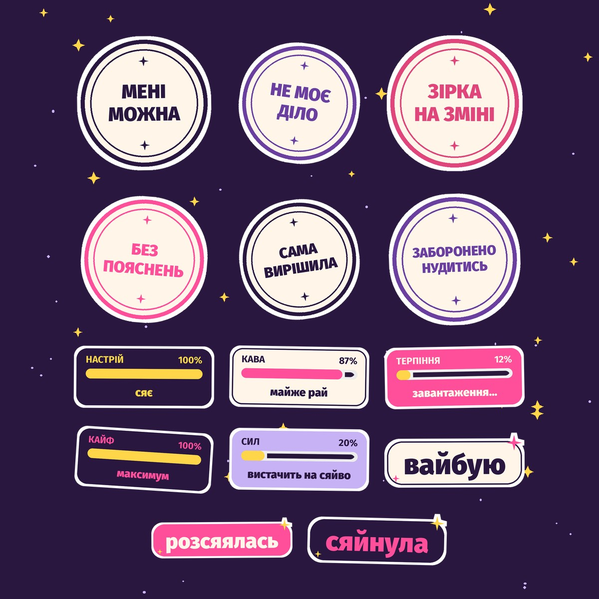

← Накопич
Новинка · набір наліпок
Зоряна дівчина
80 наліпок, які хочеться скинути подрузі скриншотом. Діалоги, штампи, шкали настрою, ярлики й вигадані слова: «відсяяла», «вайбую», «розсяялась». Українською, з характером.



Що всередині
- 80 наліпок у форматі PNG з прозорим фоном, білий контур як у справжніх наліпок
- 7 діалогів: «— Ти де? — У своєму сяйві.»
- 6 штампів: «Заборонено нудитись», «Не моє діло», «Зірка на зміні»
- 7 шкал настрою: «кава 87% — майже рай», «терпіння 12% — завантаження…»
- 7 ярликів, 7 статусів і 6 вигаданих слів
- 28 фраз-плашок, а також зірки, місяці та скотч (12 штук)
- Працюють у GoodNotes, Notability та будь-якому застосунку, що приймає PNG
90 наліпок (80 + 10 у подарунок) · один архів · без підписок
Як отримати
- Натисни «Купити» і оплати карткою, Apple Pay або Google Pay
- Архів із наліпками одразу прийде після оплати
- Додай наліпки у свій застосунок і користуйся
Купити · 199 грн
Для особистого користування. Перепродаж і поширення файлів заборонені.
Питання
Як додати наліпки в GoodNotes?
Відкрий інструмент «Елементи» і натисни «Додати фото» або «Імпорт з…», обери PNG-файли з архіву. Далі перетягуй наліпки на сторінку пальцем чи стилусом.
Це наліпки для паперу?
Ні, це цифрові наліпки: файли PNG для планшета, телефона й сторіс.
Коли я отримаю файли?
Одразу після оплати: посилання для завантаження прийде на сторінці покупки та на пошту. Реєструватися не треба.
А якщо архів не відкривається?
Напиши нам у Дірект Instagram @nakopych_challenge — допоможемо.